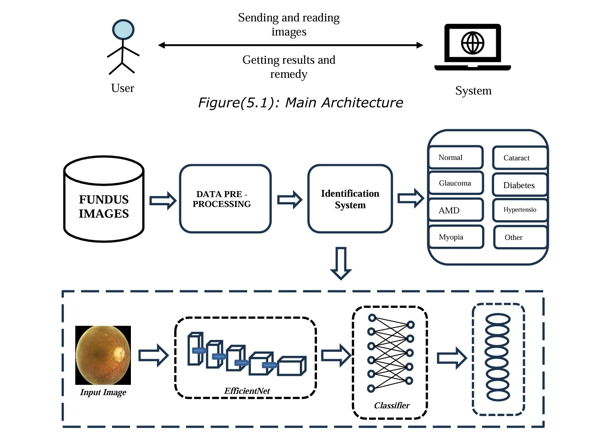

Ocular diseases present a significant public health concern globally,
warranting precise and efficient diagnostic methodologies. This research
aims to develop an approach for identifying ocular diseases by classifying
eight different eye conditions using fundus images. Leveraging transfer
learning with EfficientNet, a powerful convolutional neural
network architecture which is employed to learn discriminative features
from the images, facilitating precise classification of various ocular
diseases. Performance evaluations on the Ocular disease dataset ODIR
highlight the practicality and effectiveness of our scheme. In addition to
diagnostics, this combination has the potential for application in the fields
of telemedicine and telehealth, enabling rapid and reliable diagnosis of
eye diseases, especially in restricted or remote areas. The combination
of Transfer Learning and CNN not only improves the accuracy of diagnosis
but also simplifies the analysis process, helping to increase the efficiency
of treatment and improve the patient's outcome effect.
Index Terms — Convolutional Neural Network (CNN), Transfer
Learning, Ocular Diseases, Efficiency, Medical Imaging.